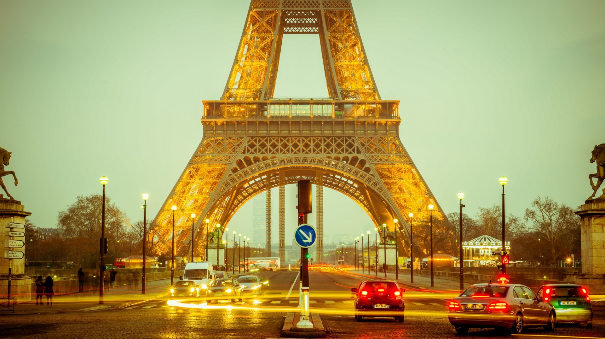
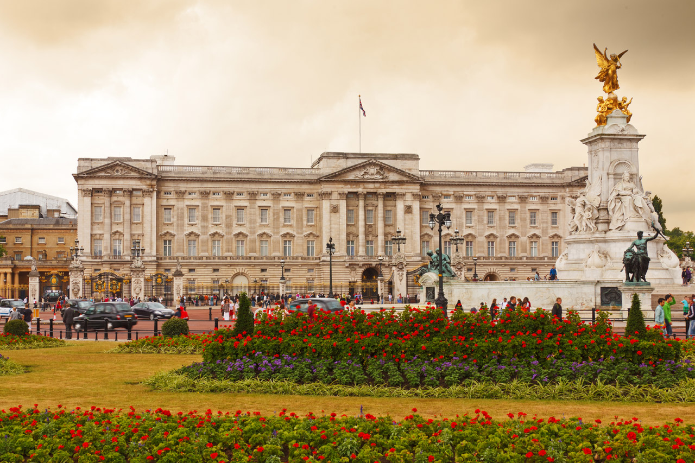
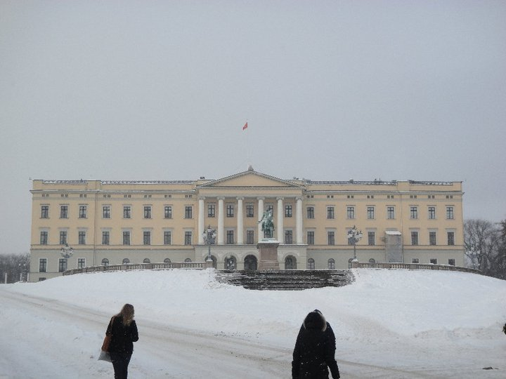
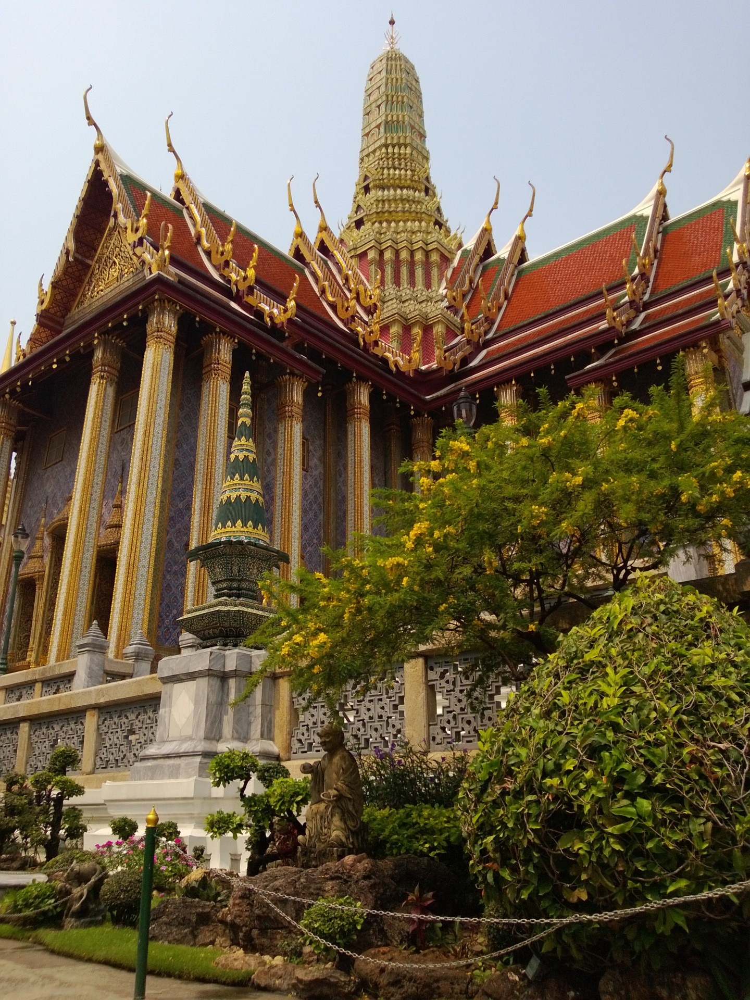
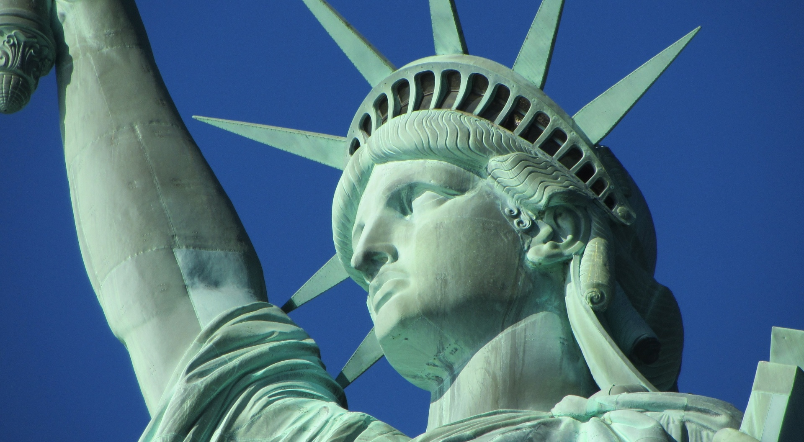

There are so many reasons why people choose to leave the comfort of their homes to venture somewhere else, either for a shorter or longer period of time. Here are some of those reasons:
Desire to discover other cultures;
Get away from the bad weather for a while;
Visit friends and relatives living abroad;
Boredom.
The fact is that most people love to travel.
Here are some fan facts about some cities*:
Paris: The only city in the world where McDonalds's 'M' is white instead of yellow!
London: The Buckingham Palace was built on top of a brothel!
Oslo: Remains the most expensive city in the world!
Bangkok: Is the longest city name in the world, with a total of 163 symbols!
New York: Has the longest street network in the world!